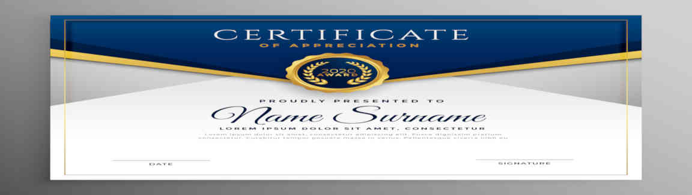

Projects for PeopleCert
Enterprise Data Warehouse
As soon as I joined PeopleCert, I started creating the EDW, using the Kimball methodology, and Microsoft Azure technology. The EDW serves as a 'single-version-of-truth' for all formal reports within the company -as well as reports to external stakeholders. It offered self-service reporting capabilities through SSAS tabular functionality, which enabled business analysts across the organization to create their own reports in Excel and Power BI, improving the quality of their deliverables and increasing their productivity 10x. This success, coupled with the value generated by automatic reports and advanced analytics created by our team, enabled the team to grow to 5 people. Both the team and the analytical capabilities of the organization continue to grow today.
Master Data Hub
The MDH is both a component of the EDW and a standalone system used for master data management. The accuracy & timeliness of the consolidated data in the EDW depend on the data flows and the curation work performed on the MDH. Developing an MDH, enabled savings not only due to data quality and ease of consolidation, but due to improved communication and collaboration of people across departments (including external development teams), who could use the consolidated master data within their processes. Streamlining the automatic B2B invoicing middleware (also performed by our team) was one such example.
AXELOS Data Mart
AXELOS was the main certification body, whose exams were delivered by PeopleCert worldwide. Today, PeopleCert has acquired AXELOS, but back in 2017 AXELOS issued an RFP to select one of 8 examination institutes, as their single exam management partner. RFP requirements involved the development of reporting capability to automatically share information with AXELOS. I designed the data mart and the relevant proposition piece, and after we won the RFP, our team developed the relevant functionality. All relevant data was sourced from the EDW and delivered to an AXELOS cloud database. This database also served, in the years that followed, as input for a data warehouse developed by AXELOS themselves. Of course today, everything is mananged by PeopleCert, including reports based on the AXELOS data warehouse; some of which I helped migrate to the BI capabilities supported by the EDW.
System Dynamics Reporting pack
This was a very insightful reporting pack, based on a System Dynamics approach. We created it together with Thomas Wittig, an external consultant. It provided a flow/stock perspective across PeopleCert processes, facilitating improved joint decision making across departments. We even created a 'making-of' video together with Thomas, discussing about the project vision and the approach we followed.
Customer Segmentation PoC
This proof-of-concept involved performing advanced analytics on exams data, and was delivered together with Thomas. Utilizing data science & process mining algorithms, we managed to understand better the customer journey and identify the promotional activities that engaged with exam candidates more effectively, as per their demographic and geographical characteristics.
Sales Reporting Pack
This was the one of the first reports I created at PeopleCert, supported by the first data mart of the EDW. Starting as a simple set of reports, listing sales from different customer, product and geographical perspectives, it evolved towards an informative reporting pack, that included information on the performance of various sales tactics and business development teams; it was used consistently by senior management, marketing & sales.
Automatic P&L and Balance Sheet Generation
We worked closely with the finance & accounting department to incorporate all the G/L entries in the EDW. This included complex calculation logic, to assign G/L entries to Balance Sheet and P&L reporting groups. As a result, the financial reporting team was able to create relevants reports on demand, while the P&L and Balance Sheet were generated automatically. This led to a 50x increase in productivity on the relevant tasks, ensuring quality at the same time.
Customer Service Reports
While those were standard reports, generating basic KPI's for monitoring performance and compliance to SLA's of the customer service department, it gave me to opportunity to propose a Six Sigma approach and create advanced Python visuals in Power BI, as a proof-of-concept.
Procurement Reports
We created a set of reports to help the relevant department manage various aspects of the procurement lifecycle. We followed a different approach on those reports, in the sense that no relevant data mart was created in the EDW. The reports were created solely on Power BI. Leveraging synergies with the rest of Power Platform, I enabled notifications to stakeholders embedding e-mail functionality within the reports; also utilized integrations with MS teams and designed processes for more effective collaboration.
PASSPORT Reports Website
The reports website is a component of the PASSPORT suite of exam delivery & management applications, developed in-house by PeopleCert. We worked together with the developers' team to populate some of the reports from the EDW, aligning metrics definitions with other reporting packs used internally and externally.